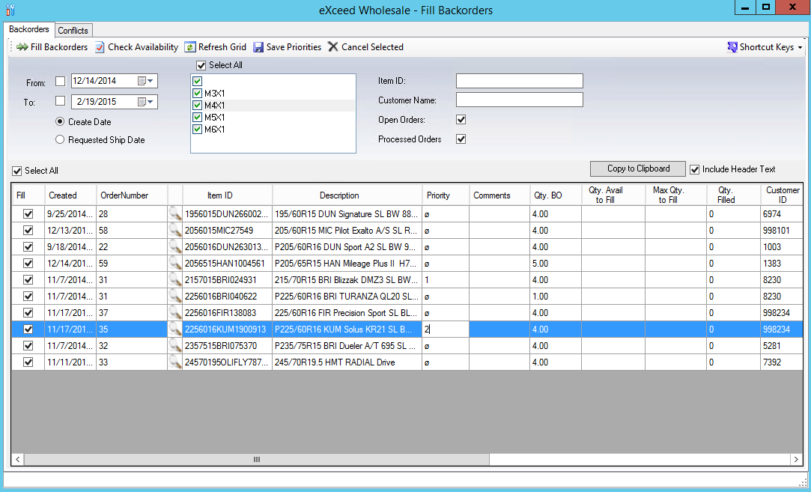
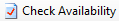
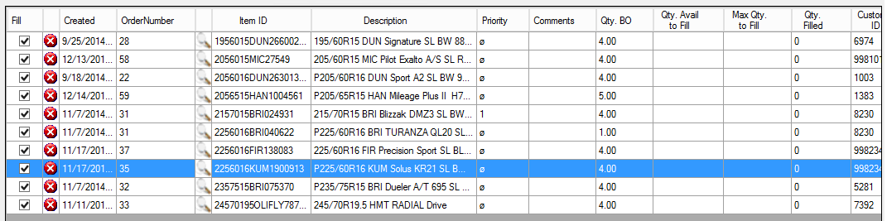
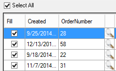
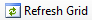

Filling Back Orders
Home Screen: Select  then select from start a task
then select from start a task

Setting Priorities
By Default, orders are prioritized by order date. Oldest will fill first
- Set criteria selection
- From and To date will default – Change if needed
- Create Date: Date order was created will be default
- Requested Ship Date: Toggle on if want to deviate from default
- Routes: Select All will be default. Unselect and select specific rotes if needed
- Item ID: Searches and display backorders for that item only
- Customer Name: Search by customer for orders specific to them
- Open Orders: By default, is checked, uncheck if desired. Refers to order that can be added to.
- Processed orders: By default, is checked, uncheck if needed. Refers to order that are in the process of being shipped
 Note: allows information that is displayed to be copied and then pasted into another application such as Word or Excel. Include header text will be check by default in this function.
Note: allows information that is displayed to be copied and then pasted into another application such as Word or Excel. Include header text will be check by default in this function.
- Edit priority column to reflect the order in which you would like orders filed
- Select Save Priorities
Check Availability
- Select

- Displays which line items are available to be filled with green check mark

Fill Backorders
If items have quantity available to fill it will be displayed in column labeled Qty. Avail. To Fill. May only fill partially and the difference will be reflected in Max Qty. to Fill column.
- By default, Select All is checked. If specific orders are desired, uncheck select all and check line items individually (May want to do this in situation where full quantity ordered cannot be filled)

- Select
- Exit Fill Backorders screen when complete
Other Buttons

Can be used to refresh screen to reflect new backordered items that have come in since initially opened.Can be used to open order